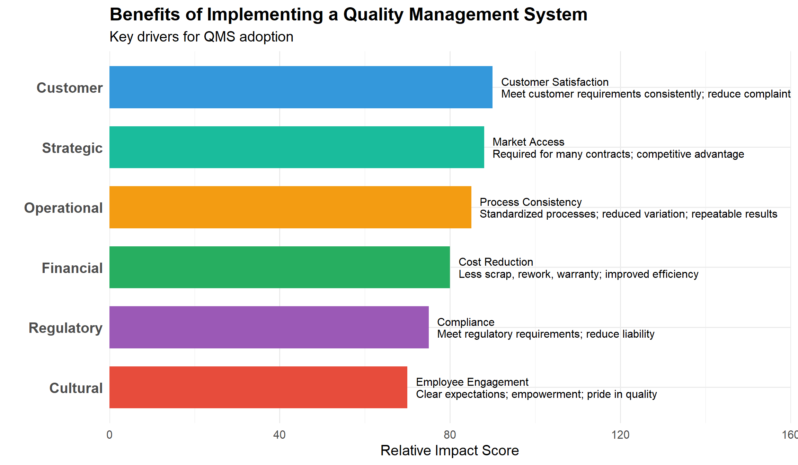
13 Quality Management Systems
13.1 Learning Objectives
After completing this chapter, you will be able to:
- Define quality management systems and explain their purpose in manufacturing
- Describe the structure and requirements of ISO 9001:2015
- Identify industry-specific quality standards (IATF 16949, AS9100, ISO 22000)
- Explain the documentation hierarchy and control requirements
- Conduct internal audits using systematic methodologies
- Implement effective corrective and preventive action (CAPA) processes
- Understand management review and continuous improvement requirements
- Integrate quality tools (SPC, PFMEA, MSA) within a QMS framework
13.2 Introduction to Quality Management Systems
A Quality Management System (QMS) is a formalized system that documents processes, procedures, and responsibilities for achieving quality policies and objectives. It coordinates and directs an organization’s activities to meet customer and regulatory requirements while continuously improving effectiveness.
13.2.1 Why Implement a QMS?
13.2.2 The Evolution of Quality Management
| Era | Approach | Focus | Key Figures/Standards |
|---|---|---|---|
| Pre-1900s | Craftsmanship | Individual skill; master craftsmen | Guilds |
| 1900-1940s | Inspection | Sort good from bad; end-of-line inspection | Taylor |
| 1940-1960s | Statistical Quality Control | Control charts; sampling; Shewhart, Deming | Shewhart, Deming |
| 1960-1980s | Quality Assurance | Prevention; systems approach; documented procedures | Juran, Feigenbaum |
| 1980-2000s | Total Quality Management | Company-wide quality; customer focus; continuous improvement | Crosby, ISO 9000 |
| 2000s-Present | Integrated Management | Risk-based thinking; integration with business strategy; digital quality | ISO 9001:2015, Industry 4.0 |
13.2.3 Quality Management Principles
ISO 9000 defines seven quality management principles that form the foundation of all QMS standards:
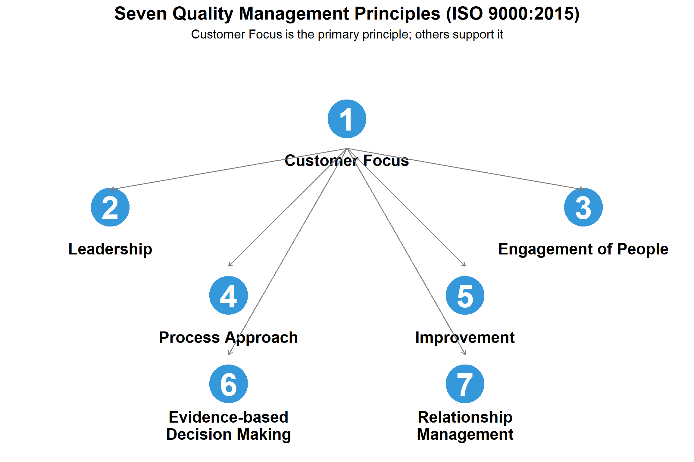
13.3 ISO 9001:2015 Structure
ISO 9001:2015 is the international standard for quality management systems. It uses the High-Level Structure (HLS) common to all ISO management system standards.
13.3.1 The Ten Clauses
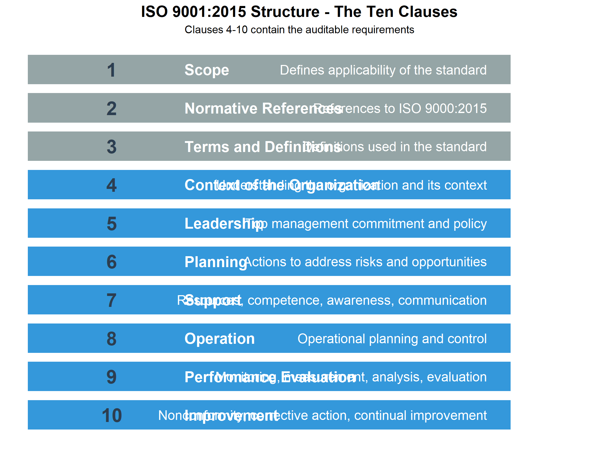
13.3.2 The Process Approach and PDCA
ISO 9001:2015 emphasizes the process approach combined with the Plan-Do-Check-Act (PDCA) cycle:
Warning: Using `size` aesthetic for lines was deprecated in ggplot2 3.4.0.
ℹ Please use `linewidth` instead.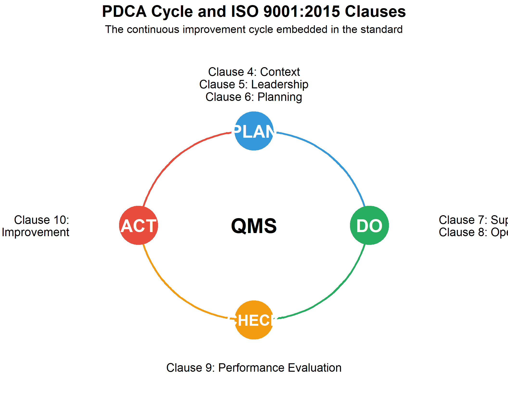
13.3.3 Risk-Based Thinking
ISO 9001:2015 introduced risk-based thinking throughout the QMS:
| Clause | Requirement | Risk_Application |
|---|---|---|
| 4.1 | Context of the Organization | Identify internal/external issues that could affect QMS outcomes |
| 4.2 | Interested Parties | Understand needs/expectations that could impact quality |
| 6.1 | Actions to Address Risks and Opportunities | Plan actions to address risks and opportunities; integrate into processes |
| 8.1 | Operational Planning and Control | Control processes considering risks identified in planning |
| 9.1 | Monitoring and Measurement | Monitor effectiveness of actions taken to address risks |
| 10.2 | Nonconformity and Corrective Action | Analyze nonconformities; update risks/opportunities as needed |
Understanding Risk-Based Thinking
Risk-based thinking doesn’t require formal risk management (like FMEA for every process), but rather:
- Consider risks when designing and implementing the QMS
- Preventive action is built into the system, not a separate activity
- Proportional response - more rigorous controls for higher-risk processes
- Opportunities are also considered (not just negative risks)
Example: A food manufacturer identifies “allergen cross-contamination” as a significant risk. Risk-based thinking leads them to: - Dedicated production lines for allergen-containing products - Enhanced cleaning verification procedures - Staff training on allergen awareness - Increased inspection frequency after changeovers
The extent of controls is proportional to the risk level.13.4 Industry-Specific Quality Standards
Different industries have developed standards that build upon ISO 9001 with additional sector-specific requirements.
13.4.1 Comparison of Major Standards
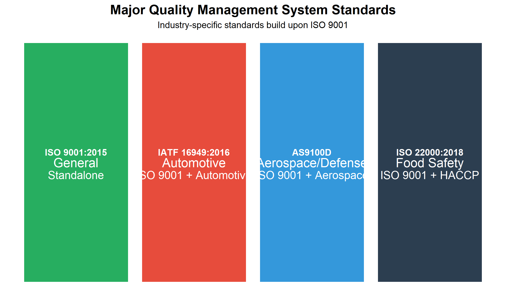
13.4.2 IATF 16949:2016 (Automotive)
IATF 16949 is the automotive quality standard, required by most major OEMs (Ford, GM, Toyota, VW, etc.).
| Requirement Area | ISO 9001 | IATF 16949 Addition |
|---|---|---|
| Product Safety | Implied | Explicit requirements for product safety processes |
| APQP/PPAP | Not specified | APQP phases required; PPAP submission mandatory |
| Control Plans | Not specified | Control plans required for all parts; specific format |
| MSA | General requirement | MSA studies required per AIAG MSA manual |
| SPC | General requirement | SPC for all special characteristics |
| Supplier Quality | Basic purchasing | Supplier development; second-party audits; IATF certification flow-down |
| Warranty Management | Complaint handling | NTF analysis; warranty data analysis; field return analysis |
| Manufacturing Feasibility | Review of requirements | Documented manufacturing feasibility review |
13.4.3 Automotive Core Tools
IATF 16949 requires the use of five core tools:
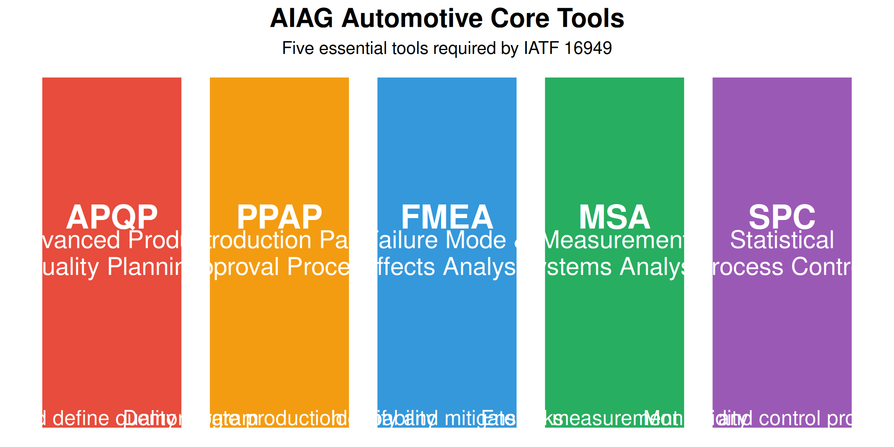
13.4.3.1 APQP: Advanced Product Quality Planning
APQP is a structured framework for developing products that ensures customer requirements are met through careful planning and defined milestones.
Warning in geom_segment(aes(x = 0.6, xend = 5.4, y = 1, yend = 1), arrow = arrow(length = unit(0.3, : All aesthetics have length 1, but the data has 5 rows.
ℹ Please consider using `annotate()` or provide this layer with data containing
a single row.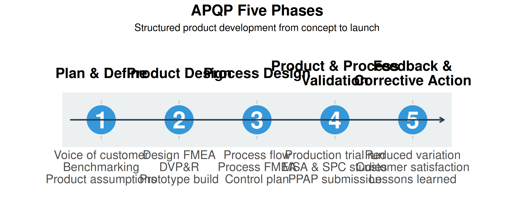
Example: New Brake Caliper Development
A Tier 1 supplier developing a new brake caliper for an OEM would follow APQP:
- Phase 1: Gather customer requirements (stopping distance, weight limits, environmental conditions), benchmark competitor products
- Phase 2: Design the caliper, create Design FMEA (what if piston seal fails?), build prototypes for testing
- Phase 3: Design manufacturing process, create Process FMEA, develop control plan for machining and assembly
- Phase 4: Run production trial, validate Cpk > 1.67 for critical dimensions, submit PPAP package
- Phase 5: Monitor warranty returns, implement kaizen improvements, document lessons for next program
13.4.3.2 PPAP: Production Part Approval Process
PPAP provides evidence that the supplier understands customer requirements and can consistently produce conforming parts during actual production runs.
| Element | Description |
|---|---|
| 1. Design Records | Part drawings, CAD files, specifications |
| 2. Engineering Change Documents | Documentation of any design changes since original approval |
| 3. Customer Engineering Approval | Evidence of customer sign-off on design |
| 4. Design FMEA | Risk analysis of product design failure modes |
| 5. Process Flow Diagram | Visual representation of manufacturing steps |
| 6. Process FMEA | Risk analysis of process failure modes |
| 7. Control Plan | Document describing controls for each process step |
| 8. MSA Studies | Gage R&R studies proving measurement system adequacy |
| 9. Dimensional Results | Actual measurements vs. specifications for all dimensions |
| 10. Material/Performance Test Results | Test results for material properties and performance requirements |
| 11. Initial Process Studies (SPC) | Cpk/Ppk studies demonstrating process capability |
| 12. Qualified Lab Documentation | Scope and accreditation of testing laboratories |
| 13. Appearance Approval Report | Required for parts with color, grain, or surface requirements |
| 14. Sample Production Parts | Parts from production run for customer evaluation |
| 15. Master Sample | Retained reference sample for future comparison |
| 16. Checking Aids | Fixtures, gages, or templates used to inspect parts |
| 17. Customer-Specific Requirements | OEM-specific requirements (Ford, GM, Toyota, etc.) |
| 18. Part Submission Warrant (PSW) | Summary document with supplier certification |
PPAP Submission Levels:
| Level | Requirements | When Used |
|---|---|---|
| 1 | PSW only | Low-risk parts, trusted suppliers |
| 2 | PSW + samples + limited data | Standard submission |
| 3 | PSW + samples + complete data | Default level; new parts/suppliers |
| 4 | PSW + other per customer direction | Customer-specified requirements |
| 5 | PSW + samples + complete data at supplier site | Full documentation review on-site |
Example: Fuel Injector PPAP Submission
A supplier submitting PPAP for a new fuel injector would include:
- Dimensional results: 100% inspection of 300 parts showing all 47 dimensions in spec
- MSA study: Gage R&R < 10% for critical spray angle measurement
- Process capability: Cpk = 1.89 for nozzle hole diameter (spec requires Cpk ≥ 1.67)
- Material certs: Steel chemistry and hardness test results
- Performance tests: Flow rate, spray pattern, durability (1 million cycles)
- PSW: Signed warrant certifying all requirements met
13.4.3.3 FMEA: Failure Mode and Effects Analysis
FMEA is a systematic method for identifying potential failures, their causes, and effects, then prioritizing actions to reduce risk. Two types are used in automotive:
- Design FMEA (DFMEA): Analyzes potential failures in product design
- Process FMEA (PFMEA): Analyzes potential failures in manufacturing processes
| Column | Description | Example |
|---|---|---|
| Process Step | The operation being analyzed | Torque fastener to 25 Nm |
| Potential Failure Mode | How the process could fail to meet requirements | Under-torque / Over-torque |
| Potential Effect(s) | Impact on customer if failure occurs | Joint loosens in service; wheel detaches |
| Severity (S) | 1-10 rating of effect seriousness (10 = safety/regulatory) | 10 (safety critical) |
| Potential Cause(s) | Root cause of the failure mode | Worn tool, wrong program, operator error |
| Occurrence (O) | 1-10 rating of cause likelihood (10 = very frequent) | 4 (occasional occurrence) |
| Current Controls | Existing prevention or detection controls | Torque monitoring, error-proofing |
| Detection (D) | 1-10 rating of detection ability (10 = cannot detect) | 3 (high detection capability) |
| RPN | S × O × D = Risk Priority Number | 10 × 4 × 3 = 120 |
| Recommended Actions | Actions to reduce S, O, or D | Add DC torque tool with automatic reject |
Action Priority Based on RPN:
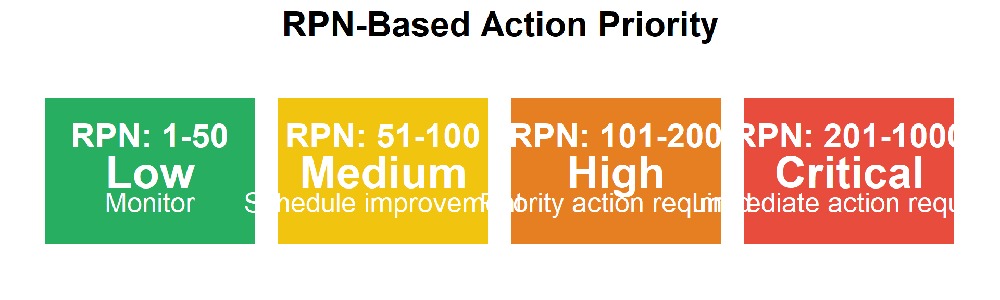
Example: Engine Block Machining PFMEA
| Step | Failure Mode | Effect | S | Cause | O | Control | D | RPN | Action |
|---|---|---|---|---|---|---|---|---|---|
| Bore cylinder | Oversize bore | Piston slap, oil consumption | 7 | Tool wear | 5 | SPC chart, tool life monitor | 4 | 140 | Add in-process bore gage |
| Hone surface | Insufficient crosshatch | Poor ring seal, oil burning | 8 | Wrong hone stones | 3 | Visual inspection | 6 | 144 | Add surface roughness measurement |
| Wash block | Residual chips | Engine seizure | 9 | Blocked nozzle | 4 | Cleanliness spec check | 5 | 180 | Add particle counter, automated flush verification |
13.4.3.4 MSA: Measurement Systems Analysis
MSA ensures that measurement systems provide reliable data for decision-making. Poor measurement systems can cause good parts to be rejected (false rejects) or bad parts to be accepted (false accepts).
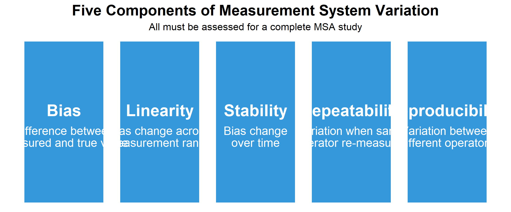
Gage R&R Study Acceptance Criteria:
| %GRR | Interpretation | Action |
|---|---|---|
| < 10% | Excellent | Acceptable for all applications |
| 10-30% | Acceptable | May be acceptable depending on application, cost of gage, cost of repairs |
| > 30% | Unacceptable | Measurement system must be improved; cannot make reliable decisions |
Number of Distinct Categories (ndc): Should be ≥ 5 to adequately discriminate between parts.
Example: Gage R&R Study for Shaft Diameter
A supplier conducts a Gage R&R study for a micrometer used to measure shaft diameter (spec: 25.00 ± 0.05 mm):
Study Setup: - 3 operators measure 10 parts, 3 times each = 90 measurements - Parts selected to represent the range of production variation
Results: | Source | Variance | % Contribution | |:——-|:———|:—————| | Part-to-Part | 0.000156 | 87.2% | | Repeatability | 0.000018 | 10.1% | | Reproducibility | 0.000005 | 2.7% | | Total Gage R&R | 0.000023 | 12.8% |
Conclusion: %GRR = 12.8% is acceptable (between 10-30%). ndc = 7 (≥5 required). The measurement system is adequate for this application.
13.4.3.5 SPC: Statistical Process Control
SPC uses control charts to monitor process stability and capability, distinguishing between common cause variation (inherent to the process) and special cause variation (assignable causes requiring investigation).
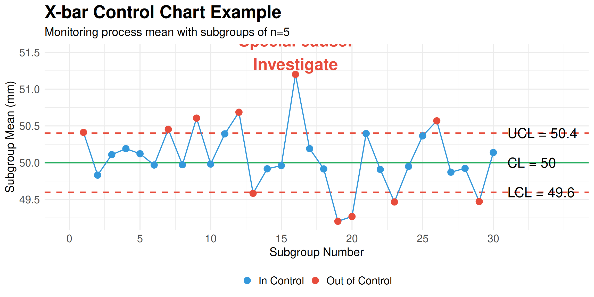
Common Control Chart Types:
| Chart | Data Type | Monitors | When to Use |
|---|---|---|---|
| X-bar & R | Variable, subgroups | Mean and range | Most common; subgroups of 2-10 |
| X-bar & S | Variable, subgroups | Mean and std dev | Subgroups > 10 |
| I-MR | Variable, individuals | Individual values and moving range | Slow processes, destructive testing |
| p-chart | Attribute | Proportion defective | Variable sample sizes |
| np-chart | Attribute | Number defective | Fixed sample sizes |
| c-chart | Attribute | Count of defects | Fixed opportunity area |
| u-chart | Attribute | Defects per unit | Variable opportunity area |
Process Capability Indices:
\[C_p = \frac{USL - LSL}{6\sigma}\] \[C_{pk} = \min\left(\frac{USL - \bar{x}}{3\sigma}, \frac{\bar{x} - LSL}{3\sigma}\right)\]
| Cpk Value | Interpretation | PPM Defective |
|---|---|---|
| < 1.00 | Not capable | > 2,700 |
| 1.00 - 1.33 | Marginally capable | 64 - 2,700 |
| 1.33 - 1.67 | Capable | 0.6 - 64 |
| ≥ 1.67 | Highly capable (IATF requirement) | < 0.6 |
Example: SPC for Injection Molded Connector
A supplier monitors critical dimensions on an injection molded electrical connector:
Process Setup: - Critical dimension: Pin spacing = 2.54 ± 0.08 mm - Sample 5 parts every 30 minutes - X-bar and R charts maintained at the press
Results over one shift: - Process mean (X-double-bar) = 2.539 mm - Average range (R-bar) = 0.024 mm - Estimated σ = R-bar / d2 = 0.024 / 2.326 = 0.0103 mm
Capability: - Cp = (2.62 - 2.46) / (6 × 0.0103) = 2.59 - Cpk = min[(2.62 - 2.539)/(3 × 0.0103), (2.539 - 2.46)/(3 × 0.0103)] = min[2.62, 2.56] = 2.56
Conclusion: Cpk = 2.56 exceeds IATF requirement of 1.67. Process is highly capable.
13.4.4 AS9100D (Aerospace/Defense)
AS9100D adds aerospace-specific requirements to ISO 9001:
| Area | Requirement |
|---|---|
| Configuration Management | Control product configuration throughout lifecycle; change management |
| First Article Inspection | FAI per AS9102; documented verification of first production parts |
| Counterfeit Parts Prevention | Controls to prevent counterfeit parts entering supply chain |
| Special Processes | NADCAP accreditation for special processes (welding, heat treat, NDT) |
| Product Safety | Product safety requirements; reporting of unsafe conditions |
| Risk Management | Explicit risk management process (often using AS/NZS 4360 or similar) |
| Human Factors | Consideration of human factors in process design |
13.4.5 ISO 22000:2018 (Food Safety)
ISO 22000 integrates quality management with HACCP (Hazard Analysis Critical Control Points):
| Element | Description | Example |
|---|---|---|
| Prerequisite Programs (PRPs) | Basic hygiene conditions: cleaning, pest control, personnel hygiene, facility design | Sanitation schedule, hand washing stations, pest control contract |
| Operational PRPs (OPRPs) | PRPs essential to control specific identified hazards | Metal detector for physical hazard control |
| HACCP Plan | Critical Control Points (CCPs) for significant hazards; critical limits; monitoring | Pasteurization temperature ≥72°C for 15 seconds |
| Traceability | One-step-back, one-step-forward traceability; recall procedures | Lot coding, supplier records, distribution records |
| Emergency Preparedness | Procedures for food safety emergencies; recall/withdrawal | Product recall procedure, mock recall exercises |
| Validation and Verification | Validate control measures; verify HACCP plan effectiveness | Challenge studies, environmental monitoring, internal audits |
13.5 Documentation Requirements
A QMS requires documented information to ensure consistency, provide evidence, and enable improvement.
13.5.1 Documentation Hierarchy
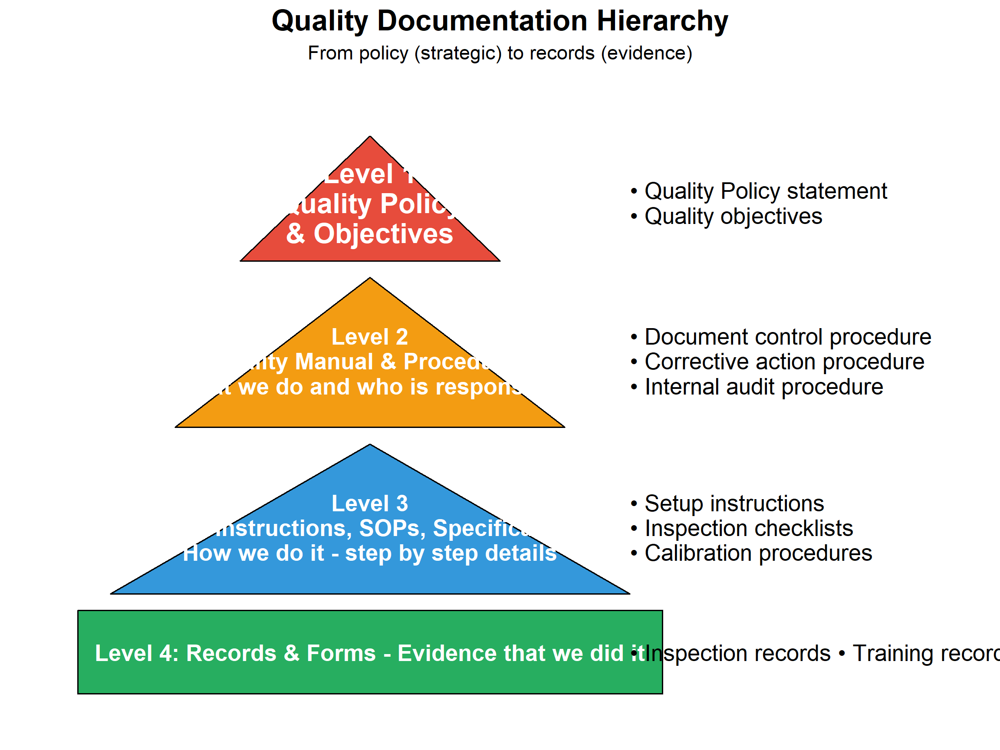
13.5.2 Document Control Requirements
| Requirement | Description | Implementation |
|---|---|---|
| Approval | Documents reviewed and approved for adequacy before issue | Approval signatures or electronic workflow |
| Review & Update | Reviewed, updated as necessary, and re-approved | Periodic review schedule; change request process |
| Identification | Identified with title, date, revision, author | Document numbering system; revision control |
| Availability | Relevant versions available at points of use | Controlled copies at workstations; electronic access |
| Protection | Protected from loss, damage, unauthorized changes | Backup systems; access controls; original storage |
| Obsolete Control | Obsolete documents identified and prevented from unintended use | Stamp 'OBSOLETE'; remove from use; archive |
| External Documents | External documents identified and distribution controlled | List of external documents; master copy control |
| Record Retention | Records retained for specified periods; protected; retrievable | Retention matrix; secure storage; indexing |
13.5.3 Documented Information Required by ISO 9001:2015
| Type | Clause | Requirement |
|---|---|---|
| Documents (shall be maintained) | ||
| Documents (shall be maintained) | 4.3 | Scope of the QMS |
| Documents (shall be maintained) | 5.2 | Quality policy |
| Documents (shall be maintained) | 6.2 | Quality objectives |
| Documents (shall be maintained) | 7.1.5 | Monitoring and measuring resources (calibration) |
| Documents (shall be maintained) | 7.2 | Evidence of competence |
| Documents (shall be maintained) | 8.1 | Evidence of conformity to processes |
| Documents (shall be maintained) | 8.5.1 | Controlled conditions for production |
| Records (shall be retained) | ||
| Records (shall be retained) | 7.1.5.1 | Calibration/verification results |
| Records (shall be retained) | 7.2 | Training records |
| Records (shall be retained) | 8.2.3.2 | Results of review of requirements |
| Records (shall be retained) | 8.3.3 | Design and development inputs |
| Records (shall be retained) | 8.3.4 | Design and development controls |
| Records (shall be retained) | 8.3.5 | Design and development outputs |
| Records (shall be retained) | 8.3.6 | Design and development changes |
| Records (shall be retained) | 8.5.2 | Traceability requirements |
| Records (shall be retained) | 8.6 | Release of products/services |
| Records (shall be retained) | 9.1.1 | Results of monitoring and measurement |
13.6 Internal Auditing
Internal audits are systematic, independent evaluations of the QMS to determine if it conforms to requirements and is effectively implemented.
13.6.1 The Audit Process
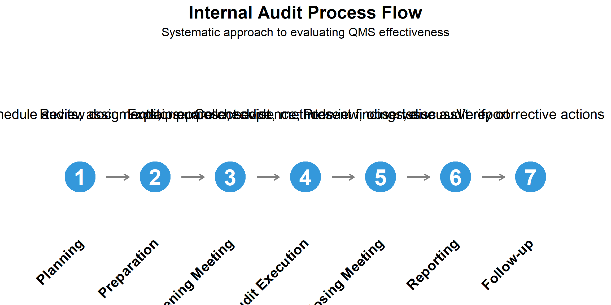
13.6.2 Audit Checklist Example
| Clause | Requirement | Question | Evidence |
|---|---|---|---|
| 7.1.5 | Monitoring and measuring resources suitable for the type of activities | How do you determine what measuring equipment is needed? | Gauge selection procedure |
| 7.1.5 | Resources maintained to ensure continued fitness for purpose | What maintenance is performed on measuring equipment? | PM records |
| 7.1.5 | Documented information on fitness for purpose retained | Can you show me calibration records for this micrometer? | Calibration certificate |
| 7.1.5 | Measuring equipment identified to determine status | How can I tell if this gauge is currently calibrated? | Calibration stickers/tags |
| 7.1.5.2 | Measurement traceability when required | What standards are these gauges calibrated against? | Traceability certificates |
13.6.3 Types of Audit Findings
| Finding Type | Definition | Example | Action Required |
|---|---|---|---|
| Major Nonconformity | Absence or total breakdown of a system; significant risk to product/customer | No calibration program exists; all gauges are uncontrolled | Immediate corrective action; root cause analysis; may affect certification |
| Minor Nonconformity | Single lapse or isolated incident; system exists but not fully effective | 3 of 50 gauges found past due for calibration | Corrective action required; typically 30-90 days |
| Observation | Weakness that could lead to nonconformity if not addressed | Calibration procedure doesn't specify what to do if gauge fails | No formal corrective action; monitor situation |
| Opportunity for Improvement | Suggestion for enhancement; not a nonconformity | Consider using electronic calibration records for faster retrieval | Consider for improvement; no requirement |
13.6.4 Auditor Competence
| Competency | Description | How_Developed |
|---|---|---|
| Knowledge of Standards | Understanding of ISO 9001 and applicable industry standards | Training courses; self-study; certification (CQA, Lead Auditor) |
| Audit Techniques | Planning, interviewing, evidence collection, reporting | Auditor training; shadowing experienced auditors |
| Industry Knowledge | Understanding of processes, products, and industry practices | Work experience; process knowledge; technical training |
| Communication Skills | Active listening, clear questioning, professional writing | Practice; feedback; soft skills training |
| Objectivity | Independence from area being audited; impartial | Audit program design; rotation of assignments |
| Professional Judgment | Ability to evaluate significance of findings | Experience; mentoring; calibration with other auditors |
13.7 Corrective and Preventive Action (CAPA)
Corrective action eliminates the cause of a detected nonconformity to prevent recurrence. Preventive action eliminates the cause of a potential nonconformity to prevent occurrence.
13.7.1 The CAPA Process
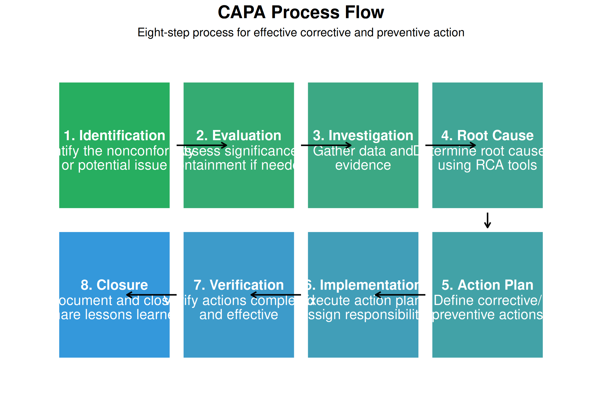
13.7.1.1 Step 1: Identification
The CAPA process begins when a nonconformity or potential problem is identified. Sources include:
| Source | Description | Priority |
|---|---|---|
| Customer Complaints | Product returns, warranty claims, customer feedback | High |
| Internal Audits | Nonconformities found during scheduled internal audits | Medium |
| Process Monitoring | SPC out-of-control conditions, trend analysis | Medium |
| Inspection/Testing | Failed inspections, test failures, rejected lots | High |
| Supplier Issues | Incoming inspection failures, supplier audit findings | Medium |
| Employee Reports | Near-misses, safety concerns, improvement suggestions | Low-Medium |
| Management Review | Issues identified during management review meetings | Medium |
| External Audits | Findings from certification body or customer audits | High |
13.7.1.2 Step 2: Evaluation
Evaluate the significance of the issue to determine the appropriate response level:
Evaluation Criteria:
| Factor | Questions to Consider |
|---|---|
| Safety | Could this harm people or the environment? |
| Customer Impact | How many customers affected? Severity of impact? |
| Regulatory | Does this violate regulations or standards? |
| Financial | What is the cost of the problem? Potential liability? |
| Frequency | Is this a one-time event or recurring pattern? |
| Detection | How was it found? Could others exist undetected? |
Containment Actions - Immediate actions to limit the impact while the investigation proceeds:
- Quarantine suspect product
- Sort and inspect inventory
- Notify affected customers
- Implement temporary controls
- Stop shipments if necessary
Example: Evaluation of Dimensional Nonconformity
A batch of machined shafts is found with diameter 0.02 mm oversize:
- Safety: Low - not a safety-critical dimension
- Customer Impact: Medium - may cause assembly issues
- Regulatory: None
- Financial: 500 parts × $15/part = $7,500 potential scrap
- Containment: Quarantine batch, 100% inspection of last 3 lots, notify customer
Decision: Proceed with formal CAPA (cost exceeds $5,000 threshold)
13.7.1.3 Step 3: Investigation
Gather all relevant data and evidence to understand what happened:
Investigation Activities:
- Review documentation: Work instructions, control plans, inspection records
- Examine physical evidence: Failed parts, raw materials, tooling
- Interview personnel: Operators, inspectors, supervisors
- Analyze data: SPC charts, measurement data, process parameters
- Timeline reconstruction: When did the problem start? What changed?
| Data Type | Examples | Collection Method |
|---|---|---|
| Process Data | Temperatures, pressures, speeds, feeds, cycle times | Data historians, SPC software, log sheets |
| Material Data | Lot numbers, certificates, incoming inspection results | Traceability system, supplier records |
| Equipment Data | Maintenance records, calibration status, tool wear | CMMS, calibration database |
| Personnel Data | Training records, shift assignments, experience level | HR system, training matrix |
| Environmental Data | Temperature, humidity, contamination levels | Environmental monitoring system |
13.7.1.4 Step 4: Root Cause Analysis
Determine the fundamental cause(s) of the problem using structured analysis tools:
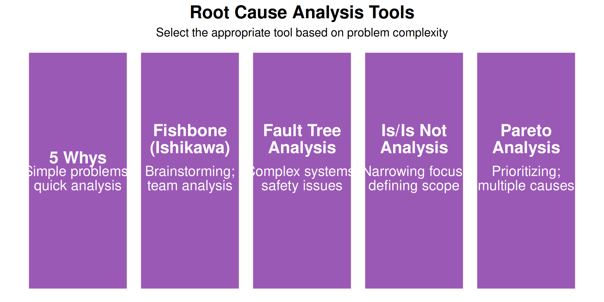
The 5 Whys Example:
| Level | Question | Answer |
|---|---|---|
| Problem | Shaft diameter is oversize | - |
| Why 1? | Why is the diameter oversize? | Tool is worn |
| Why 2? | Why is the tool worn? | Tool wasn’t changed at scheduled interval |
| Why 3? | Why wasn’t it changed? | Operator didn’t know it was due |
| Why 4? | Why didn’t operator know? | Tool life counter was reset incorrectly |
| Why 5? | Why was it reset incorrectly? | No verification step in setup procedure |
| Root Cause | Setup procedure lacks tool counter verification step |
The 6M Categories (Fishbone Diagram):
- Man (People): Training, skills, fatigue, attention
- Machine: Equipment condition, capability, maintenance
- Material: Raw material quality, specifications, storage
- Method: Procedures, work instructions, standards
- Measurement: Gages, calibration, measurement technique
- Mother Nature (Environment): Temperature, humidity, contamination
13.7.1.5 Step 5: Action Plan
Define specific corrective and/or preventive actions to address the root cause:
| Action_Type | Definition | Example | Timeframe |
|---|---|---|---|
| Correction | Fix the immediate problem (symptom treatment) | Rework or scrap the nonconforming parts | Immediate |
| Corrective Action | Eliminate the root cause to prevent recurrence | Revise setup procedure to include tool counter verification | 30-90 days typical |
| Preventive Action | Eliminate potential causes before problems occur | Add tool counter verification to ALL machine setup procedures | Ongoing improvement |
SMART Action Planning:
- Specific: Clearly defined action (not vague)
- Measurable: Can verify completion and effectiveness
- Assignable: Single owner responsible
- Realistic: Achievable with available resources
- Time-bound: Due date specified
Example: SMART Corrective Action
Poor: “Improve the setup procedure”
SMART: “Quality Engineer (J. Smith) will revise Work Instruction WI-2345 to add Step 4.7: ‘Verify tool life counter matches Tool Setup Sheet before starting production. Record counter reading on Setup Checklist Form F-102.’ Revision to be completed by April 15, training completed by April 22.”
13.7.1.6 Step 6: Implementation
Execute the action plan with clear ownership and tracking:
Implementation Requirements:
- Assign responsible person for each action
- Provide necessary resources (time, budget, authority)
- Communicate changes to affected personnel
- Update documentation (procedures, work instructions, forms)
- Train personnel on new requirements
- Implement changes in a controlled manner
Change Control Considerations:
| Change Type | Approval Required | Documentation |
|---|---|---|
| Document revision | Document owner, Quality | Revision history, training records |
| Process change | Process owner, Engineering, Quality | Change request, validation if needed |
| Equipment change | Maintenance, Engineering, Quality | Equipment qualification, capability study |
| Product change | Engineering, Quality, Customer (if required) | ECN, customer approval, PPAP if applicable |
13.7.1.7 Step 7: Verification
Verify that actions were completed AND effective:
Completion Verification: - Was the action actually implemented? - Is documentation updated and approved? - Are personnel trained? - Is the change being followed?
Effectiveness Verification: - Has the problem stopped recurring? - Do metrics show improvement? - Are there any unintended consequences?
| Method | Description | When_to_Use |
|---|---|---|
| Monitoring Period | Track for recurrence over defined period (e.g., 90 days, 3 production runs) | All CAPAs - minimum requirement |
| Statistical Analysis | Compare defect rates before/after; statistical significance testing | When baseline data exists |
| Audit Verification | Include in next internal audit; verify implementation | Process/documentation changes |
| Customer Feedback | Monitor complaints related to this issue | Customer-reported issues |
| Process Capability | Cpk study to confirm process improvement | Manufacturing process changes |
13.7.1.8 Step 8: Closure
Complete documentation and share lessons learned:
Closure Requirements:
- All actions verified complete
- Effectiveness confirmed (no recurrence)
- Documentation updated and approved
- CAPA record completed with all evidence
- Management approval for closure
Lessons Learned:
- What was the root cause?
- Could this happen elsewhere? (Horizontal deployment)
- Should procedures/training be updated system-wide?
- Are there similar products/processes at risk?
- What can we do to prevent similar issues?
Example: Horizontal Deployment
The shaft diameter CAPA revealed that setup procedures lacked tool counter verification.
Horizontal deployment: Quality reviewed ALL 47 CNC machine setup procedures and found 12 others with the same gap. All procedures were revised, and the finding was shared at the monthly quality meeting as a lesson learned.
13.7.2 CAPA Effectiveness Criteria
This worked example is fixed as a reference — read through it once, then try the editable example further on in this chapter for yourself.
# CAPA Effectiveness Tracking
set.seed(42)
# Simulate CAPA data for a year
months <- c("Jan", "Feb", "Mar", "Apr", "May", "Jun",
"Jul", "Aug", "Sep", "Oct", "Nov", "Dec")
capa_data <- data.frame(
Month = factor(months, levels = months),
Total_CAPAs = c(12, 15, 18, 14, 11, 13, 10, 9, 8, 7, 9, 6),
Closed_On_Time = c(8, 10, 12, 11, 9, 11, 9, 8, 7, 6, 8, 5),
Effective = c(7, 9, 10, 10, 8, 10, 8, 8, 7, 6, 8, 5),
Recurrence = c(2, 1, 3, 1, 0, 1, 0, 0, 1, 0, 0, 0)
)
# Calculate metrics
capa_data$On_Time_Rate <- round(capa_data$Closed_On_Time / capa_data$Total_CAPAs * 100, 1)
capa_data$Effectiveness_Rate <- round(capa_data$Effective / capa_data$Closed_On_Time * 100, 1)
cat("CAPA Performance Metrics Summary:\n")
cat("─────────────────────────────────\n")
cat("Total CAPAs initiated:", sum(capa_data$Total_CAPAs), "\n")
cat("Closed on time:", sum(capa_data$Closed_On_Time), "(",
round(sum(capa_data$Closed_On_Time)/sum(capa_data$Total_CAPAs)*100, 1), "%)\n")
cat("Verified effective:", sum(capa_data$Effective), "(",
round(sum(capa_data$Effective)/sum(capa_data$Closed_On_Time)*100, 1), "%)\n")
cat("Recurrences:", sum(capa_data$Recurrence), "\n")CAPA Performance Metrics Summary:
─────────────────────────────────
Total CAPAs initiated: 132
Closed on time: 104 ( 78.8 %)
Verified effective: 96 ( 92.3 %)
Recurrences: 9 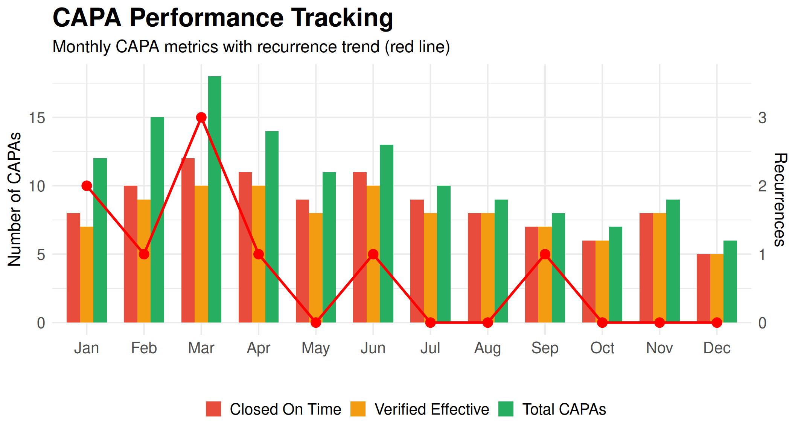
13.8 Management Review
Management review is a formal evaluation of the QMS by top management to ensure its continuing suitability, adequacy, and effectiveness.
13.8.1 Management Review Inputs
| Required Input | Details to Review | Typical Data Sources |
|---|---|---|
| Previous Review Actions | Status of actions from previous management reviews | Previous meeting minutes; action log |
| Changes in Issues/Context | Changes in external/internal issues; interested party requirements | SWOT analysis; customer feedback; regulatory changes |
| Quality Performance | Customer satisfaction; quality objectives achievement; process performance; nonconformities; audits; supplier performance | KPI dashboards; audit reports; CAPA data; customer complaints |
| Resource Adequacy | Adequacy of resources for QMS maintenance and improvement | Budget status; staffing levels; equipment condition |
| Risk/Opportunity Actions | Effectiveness of actions taken to address risks and opportunities | Risk register updates; opportunity tracking |
| Improvement Opportunities | Opportunities for improvement identified from various sources | Employee suggestions; benchmarking; industry developments |
13.8.2 Management Review Outputs
| Required Output | ISO Requirement | Examples |
|---|---|---|
| Improvement Decisions | Decisions and actions related to improvement opportunities | Launch kaizen project for top 3 customer complaints; implement new quality training program |
| QMS Changes | Any need for changes to the QMS | Revise control plan based on PFMEA update; modify inspection frequency |
| Resource Needs | Any resource needs | Hire additional quality technician; purchase new CMM; upgrade software |
13.8.3 Sample Management Review Dashboard
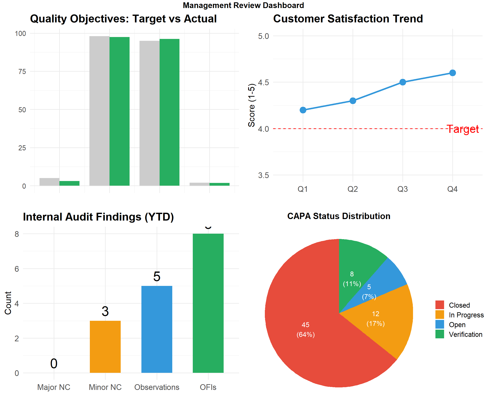
13.9 Continuous Improvement
Continuous improvement is a fundamental principle of quality management - the ongoing effort to improve products, services, and processes.
13.9.1 Improvement Methodologies
| Methodology | Origin | Best_For | Steps |
|---|---|---|---|
| PDCA | Deming/Shewhart | General improvement cycle; process changes | Plan-Do-Check-Act |
| DMAIC | Six Sigma | Data-driven problem solving; reducing variation | Define-Measure-Analyze-Improve-Control |
| Kaizen | Toyota/Lean | Small, incremental improvements; team-based | Identify waste → Improve → Standardize |
| A3 Problem Solving | Toyota | Visual problem solving; root cause analysis | Background → Goals → Analysis → Countermeasures → Follow-up |
| 8D | Ford | Customer complaints; complex problems | D0-D8 (Team, Problem, Containment, Root Cause, Actions, Verify, Prevent, Close) |
13.9.2 Key Performance Indicators (KPIs)
| Category | KPI | Formula | Target |
|---|---|---|---|
| Quality Metrics | |||
| Quality | First Pass Yield (FPY) | (Good units first time / Total units) × 100% | ≥98% |
| Quality | Customer Complaints (PPM) | (Complaints / Units shipped) × 1,000,000 | <100 |
| Quality | Internal Reject Rate | (Rejected units / Total inspected) × 100% | <1% |
| Quality | Cost of Quality | Prevention + Appraisal + Internal Failure + External Failure | <3% of sales |
| Delivery Metrics | |||
| Delivery | On-Time Delivery (OTD) | (Orders delivered on time / Total orders) × 100% | ≥98% |
| Delivery | Lead Time | Order date to delivery date | Industry benchmark |
| Delivery | Order Fulfillment Rate | (Complete orders shipped / Total orders) × 100% | ≥99% |
| Cost Metrics | |||
| Cost | Scrap Rate | (Scrap value / Total production value) × 100% | <2% |
| Cost | Rework Cost | Labor + Material for rework | Minimize |
| Cost | Warranty Cost | Warranty claims cost / Revenue | <0.5% of sales |
| Safety Metrics | |||
| Safety | Recordable Incident Rate | (Recordable incidents × 200,000) / Hours worked | <1.0 |
| Safety | Near Miss Reports | Count of near miss reports | Encourage reporting |
13.9.3 Cost of Quality (COQ)
# Cost of Quality Analysis
coq_data <- data.frame(
Category = c("Prevention", "Appraisal", "Internal Failure", "External Failure"),
Description = c("Quality planning, training, process control",
"Inspection, testing, audits, calibration",
"Scrap, rework, reinspection, downtime",
"Warranty, returns, complaints, recalls"),
Cost = c(50000, 75000, 120000, 180000)
)
total_coq <- sum(coq_data$Cost)
revenue <- 10000000 # $10M revenue
coq_data$Percent_of_COQ <- round(coq_data$Cost / total_coq * 100, 1)
coq_data$Percent_of_Revenue <- round(coq_data$Cost / revenue * 100, 2)
cat("Cost of Quality Analysis:\n")
cat("─────────────────────────────\n")
print(coq_data[, c("Category", "Cost", "Percent_of_COQ")])
cat("─────────────────────────────\n")
cat("Total Cost of Quality: $", format(total_coq, big.mark = ","), "\n")
cat("COQ as % of Revenue:", round(total_coq/revenue*100, 1), "%\n\n")
# Analysis
conformance <- coq_data$Cost[1] + coq_data$Cost[2]
nonconformance <- coq_data$Cost[3] + coq_data$Cost[4]
cat("Conformance Costs (Prevention + Appraisal): $", format(conformance, big.mark = ","),
"(", round(conformance/total_coq*100, 1), "%)\n")
cat("Nonconformance Costs (Failures): $", format(nonconformance, big.mark = ","),
"(", round(nonconformance/total_coq*100, 1), "%)\n")
cat("\nRecommendation: Increase prevention spending to reduce failure costs\n")Cost of Quality Analysis:
─────────────────────────────
Category Cost Percent_of_COQ
1 Prevention 50000 11.8
2 Appraisal 75000 17.6
3 Internal Failure 120000 28.2
4 External Failure 180000 42.4
─────────────────────────────
Total Cost of Quality: $ 425,000
COQ as % of Revenue: 4.2 %
Conformance Costs (Prevention + Appraisal): $ 125,000 ( 29.4 %)
Nonconformance Costs (Failures): $ 3e+05 ( 70.6 %)
Recommendation: Increase prevention spending to reduce failure costsWarning: Removed 1 row containing missing values or values outside the scale range
(`geom_text()`).
Removed 1 row containing missing values or values outside the scale range
(`geom_text()`).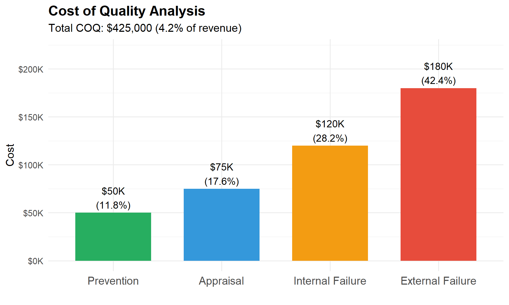
13.10 Integration with Quality Tools
A mature QMS integrates various quality tools throughout the organization.
13.10.1 Quality Tools Integration Map
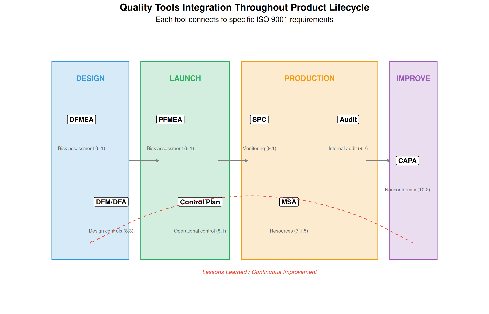
13.10.2 Linking Tools to QMS Requirements
| Quality Tool | ISO 9001 Clause | Purpose | Output Feeds Into |
|---|---|---|---|
| PFMEA | 6.1, 8.1 | Identify and mitigate process risks before production | Control Plan, Work Instructions |
| Control Plan | 8.1, 8.5.1 | Define controls for special characteristics | Work Instructions, SPC requirements |
| SPC | 9.1.1 | Monitor process performance; detect special causes | CAPA triggers, Management Review |
| MSA | 7.1.5 | Ensure measurement system is adequate | SPC validity, Control Plan |
| Internal Audit | 9.2 | Verify QMS conformance and effectiveness | CAPA triggers, Management Review |
| CAPA | 10.2 | Eliminate causes of nonconformities | Process improvements, Lessons learned |
| Management Review | 9.3 | Evaluate QMS suitability and effectiveness | Strategic decisions, Resource allocation |
13.11 Certification Process
Organizations can seek third-party certification to demonstrate QMS conformance to customers and stakeholders.
13.11.1 The Certification Journey
Warning in geom_segment(aes(x = 1, xend = 8, y = 1, yend = 1), color = "gray70", : All aesthetics have length 1, but the data has 8 rows.
ℹ Please consider using `annotate()` or provide this layer with data containing
a single row.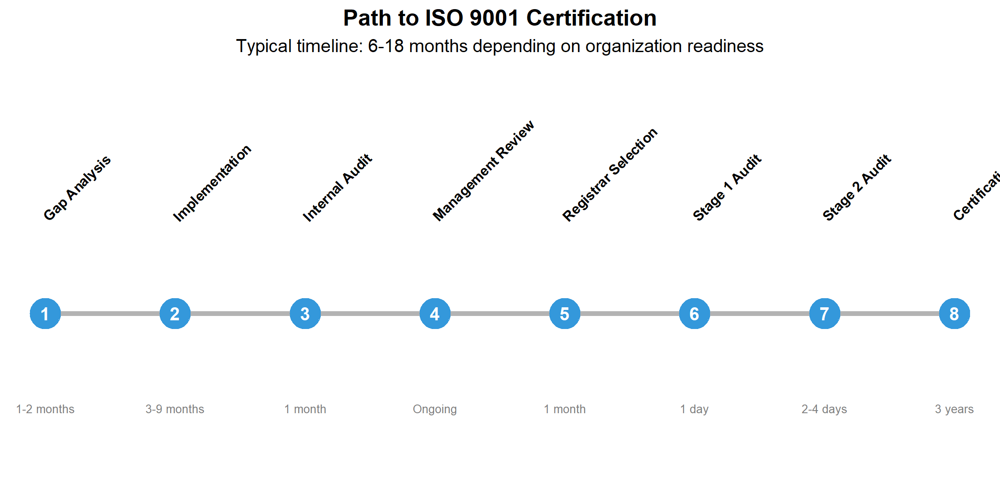
13.11.2 Certification Audit Types
| Audit Type | Purpose | Focus Areas | Duration |
|---|---|---|---|
| Stage 1 (Documentation) | Review QMS documentation; verify readiness for Stage 2 | Quality manual, procedures, scope, internal audits, management review | 0.5-1 day (remote or on-site) |
| Stage 2 (Certification) | Evaluate implementation and effectiveness of QMS | All clauses; process effectiveness; records; interviews | 2-5 days depending on size |
| Surveillance | Verify continued conformance (annual) | Selected processes; previous findings; changes | 1-2 days annually |
| Recertification | Full re-audit at end of 3-year cycle | Complete review similar to Stage 2 | 2-4 days |
13.12 Video Resources
13.12.1 ISO 9001:2015 Overview
13.12.2 Internal Auditing Best Practices
13.13 Summary
A Quality Management System provides the framework for consistently meeting customer requirements and improving organizational performance:
- ISO 9001:2015 provides the foundational requirements using risk-based thinking and PDCA
- Industry standards (IATF 16949, AS9100, ISO 22000) add sector-specific requirements
- Documentation establishes the hierarchy from policy to procedures to records
- Internal audits verify conformance and identify improvement opportunities
- CAPA eliminates root causes of nonconformities and prevents recurrence
- Management review ensures QMS suitability and drives strategic improvement
- Continuous improvement is embedded through KPIs, COQ analysis, and improvement methodologies
- Quality tools (PFMEA, SPC, MSA) integrate throughout the product lifecycle
“Quality is not an act, it is a habit.” — Aristotle
13.14 Review Questions
Question 1: Explain the seven quality management principles and how they relate to each other.
Answer:
The seven quality management principles form an interconnected foundation:
- Customer Focus (Central principle)
- Understanding and meeting customer needs is the primary purpose
- All other principles support this goal
- Leadership
- Leaders establish unity of purpose and direction
- Create conditions for people to achieve quality objectives
- Enables all other principles
- Engagement of People
- Competent, empowered people at all levels
- Essential for effective processes and customer focus
- Process Approach
- Activities managed as interrelated processes
- Enables consistent, predictable results
- Improvement
- Ongoing focus on enhancing performance
- Essential for maintaining customer satisfaction
- Evidence-based Decision Making
- Decisions based on analysis of data
- Reduces uncertainty; improves decision quality
- Relationship Management
- Managing relationships with interested parties (suppliers, partners)
- Optimizes their impact on performance
Question 2: Compare ISO 9001, IATF 16949, and AS9100. When would each be required?
Answer:
| Standard | Base | Industry | Additional Focus |
|---|---|---|---|
| ISO 9001:2015 | Standalone | General | Quality fundamentals |
| IATF 16949:2016 | ISO 9001 + automotive | Automotive | PPAP, APQP, Core Tools |
| AS9100D | ISO 9001 + aerospace | Aerospace/Defense | Configuration mgmt, FAI, counterfeit prevention |
When Required:
ISO 9001: - Any organization wanting to demonstrate quality capability - Customer or contract requirement for QMS certification - Basis for all other standards - Suitable for service, manufacturing, any industry
IATF 16949: - Suppliers to automotive OEMs (Ford, GM, Toyota, VW, etc.) - Required for production parts/materials - Required throughout automotive supply chain - Includes Customer-Specific Requirements (CSRs)
AS9100: - Suppliers to aerospace/defense contractors - Boeing, Airbus, Lockheed Martin, military programs - Required for flight-critical components - OASIS database registration required
Key Differences: - IATF 16949: Emphasizes PPAP, APQP, manufacturing process control - AS9100: Emphasizes traceability, configuration control, first article inspection - Both build on ISO 9001 with sector-specific additionsQuestion 3: Describe the documentation hierarchy in a QMS. Give an example of each level.
Answer:
Level 1: Quality Policy and Objectives - Strategic direction for quality - Signed by top management - Communicated to all employees - Example: “ABC Company is committed to delivering defect-free products that meet customer requirements through continuous improvement of our processes and people.”
Level 2: Quality Manual and Procedures - Describes WHAT is done and WHO is responsible - System-level documents - Example: Document Control Procedure (QP-001) - Purpose: Control creation, approval, distribution of documents - Scope: All QMS documents - Responsibilities: Document Control Coordinator, Department Managers - Process flow for document changes
Level 3: Work Instructions and Specifications - Describes HOW tasks are performed - Detailed step-by-step instructions - Example: Work Instruction for CNC Lathe Setup (WI-MAC-015) - Step 1: Verify program number matches work order - Step 2: Install correct tooling per setup sheet - Step 3: Set tool offsets using touch-off procedure - Step 4: Run first piece and verify dimensions
Level 4: Records and Forms - Evidence that activities were performed - Completed forms, inspection results, logs - Example: First Article Inspection Report (FM-QC-008) - Part number, revision, date - Dimensional measurements vs. specifications - Inspector signature - Disposition (Accept/Reject)Question 4: What are the key elements of an effective internal audit program?
Answer:
1. Audit Program Planning - Annual audit schedule covering all QMS processes - Risk-based frequency (higher risk = more frequent) - Documented audit program procedure - Resource allocation (trained auditors, time)
2. Auditor Competence - Trained in audit techniques - Knowledge of standards (ISO 9001, industry-specific) - Understanding of processes being audited - Independence from area being audited
3. Audit Preparation - Review of relevant documents (procedures, previous audits) - Prepared checklist linked to requirements - Notification to auditee - Defined scope and objectives
4. Audit Execution - Opening meeting (purpose, scope, schedule) - Evidence collection (documents, records, interviews, observation) - Objective evaluation against criteria - Note taking and evidence documentation
5. Reporting - Clear finding statements (nonconformities, observations) - Reference to requirement violated - Objective evidence cited - Closing meeting to present findings
6. Follow-up - Corrective action requests issued - Root cause analysis required - Verification of corrective action implementation - Verification of effectiveness
7. Continuous Improvement of Audit Program - Evaluate audit program effectiveness - Update based on organizational changes - Calibrate auditors periodically - Incorporate lessons learnedQuestion 5: Explain the difference between corrective action and preventive action. Provide an example of each.
Answer:
Corrective Action: - Eliminates the cause of a detected nonconformity - Reactive - responds to something that has already happened - Goal: Prevent recurrence of the specific problem
Example: - Nonconformity: Customer received shipment with wrong part numbers (3 incidents in past month) - Root Cause: Shipping labels printed from outdated part number list - Corrective Action: 1. Update master part number list 2. Link shipping system directly to ERP for current data 3. Add verification step comparing label to packing list - Verification: No recurrence after 3 months
Preventive Action: - Eliminates the cause of a potential nonconformity - Proactive - addresses something that hasn’t happened yet - Goal: Prevent occurrence before it happens
Example: - Potential Nonconformity: New CNC machine may produce out-of-spec parts due to operator unfamiliarity - Risk Identified Through: PFMEA analysis during new equipment installation - Preventive Action: 1. Develop comprehensive training program before machine goes live 2. Create detailed setup procedures with photos 3. Implement first-article inspection for first 30 days 4. Assign experienced mentor to new operators - Verification: Track first-pass yield during initial production period
Key Difference: - Corrective = Fix what went wrong - Preventive = Stop what might go wrong
Note: ISO 9001:2015 doesn’t explicitly require “preventive action” as a separate process. Instead, risk-based thinking throughout the QMS serves the preventive function.Question 6: Calculate and analyze the Cost of Quality for the following data. What recommendations would you make?
| Category | Cost |
|---|---|
| Quality planning | $35,000 |
| Training | $25,000 |
| Incoming inspection | $40,000 |
| In-process inspection | $55,000 |
| Final inspection | $30,000 |
| Scrap | $85,000 |
| Rework | $65,000 |
| Warranty claims | $120,000 |
| Customer returns | $45,000 |
Annual revenue: $8,000,000
Answer: (live — change the cost figures to check your own version)
Analysis: - COQ at 7.5% of revenue is HIGH (target <3%) - External failure costs are the largest category (27.5%) - Nonconformance costs (60.8%) greatly exceed conformance (39.2%) - Prevention is only 10% of COQ - very low
Recommendations: 1. Increase Prevention Investment: - Implement SPC on critical processes to reduce defects - Enhance operator training on quality standards - Apply PFMEA to identify and control failure modes
- Reduce External Failures:
- Analyze warranty data for root causes
- Improve final inspection effectiveness
- Implement containment for known issues
- Optimize Appraisal:
- Use SPC to reduce inspection where processes are capable
- Implement risk-based inspection (more for critical, less for proven)
- Target COQ Reduction:
- Short-term: Reduce external failures by 50% ($82,500 savings)
- Medium-term: Reduce internal failures by 30% ($45,000 savings)
- Long-term: Achieve COQ <3% of revenue ($240,000)
Question 7: What is risk-based thinking in ISO 9001:2015? How is it different from formal risk management?
Answer:
Risk-Based Thinking in ISO 9001:2015:
Risk-based thinking is a way of considering risks and opportunities when designing, implementing, and operating the QMS. It:
- Applies throughout the standard (not a separate clause)
- Is proportional to potential impact on conformity
- Makes preventive action part of routine planning
- Considers both risks (negative) and opportunities (positive)
Where Risk-Based Thinking Applies:
| Clause | Application |
|---|---|
| 4.1 Context | Identify external/internal issues affecting QMS |
| 4.2 Interested Parties | Understand requirements that could impact quality |
| 6.1 Planning | Plan actions to address risks and opportunities |
| 8.1 Operations | Consider risks in operational planning |
| 9.1 Performance | Monitor effectiveness of risk actions |
| 10.2 Corrective Action | Update risks/opportunities based on nonconformities |
How It Differs from Formal Risk Management:
| Aspect | Risk-Based Thinking | Formal Risk Management |
|---|---|---|
| Requirement | Implicit throughout ISO 9001 | Explicit (ISO 31000) |
| Documentation | No formal risk register required | Documented risk register |
| Methodology | No specific method required | Defined methodology (FMEA, etc.) |
| Quantification | Not required | Often quantitative |
| Scope | QMS processes | Enterprise-wide |
Practical Implementation:
Organizations should: 1. Consider risks when designing processes 2. Build controls proportional to risk level 3. Monitor and review effectiveness 4. Update as context changes
ISO 9001 does NOT require: - Formal risk management process - Risk register - Specific risk assessment methodology - Documented risk assessments (unless organization decides to)
However, many organizations do use tools like PFMEA to fulfill risk-based thinking requirements, especially in automotive (IATF 16949 requires it).Question 8: Describe what management review is and what should be included in the inputs and outputs.
Answer:
What is Management Review?
Management review is a formal, periodic evaluation of the QMS by top management to: - Ensure continuing suitability (appropriate for the organization) - Ensure adequacy (sufficient to meet requirements) - Ensure effectiveness (achieving intended results) - Ensure alignment with strategic direction - Identify improvement opportunities
Frequency: At least annually; many organizations conduct quarterly reviews
Required Inputs (ISO 9001 Clause 9.3.2):
| Input | What to Review |
|---|---|
| Status of previous actions | Actions from prior reviews - completed? effective? |
| Changes in external/internal issues | Market changes, regulations, technology, organizational changes |
| QMS performance and effectiveness | Customer satisfaction, quality objectives, process performance, nonconformities, audit results, supplier performance |
| Resource adequacy | People, infrastructure, environment, knowledge |
| Effectiveness of risk actions | Did actions address risks/opportunities? |
| Improvement opportunities | Suggestions, benchmarking, new technologies |
Required Outputs (ISO 9001 Clause 9.3.3):
| Output | Examples |
|---|---|
| Improvement decisions | Launch specific improvement projects, address recurring issues |
| QMS changes | Revise quality objectives, update processes, modify documentation |
| Resource needs | Budget approvals, hiring, equipment purchases, training |
Best Practices: - Use a standard agenda aligned with required inputs - Prepare data in advance (dashboards, trend charts) - Document decisions and action items with owners and due dates - Follow up on action completion - Keep minutes as quality records
Evidence Required: - Meeting minutes or management review report - Attendance record (top management participation) - Action items with status tracking - Data/reports presented13.15 References
ISO 9001:2015. Quality Management Systems - Requirements. International Organization for Standardization.
ISO 9000:2015. Quality Management Systems - Fundamentals and Vocabulary. International Organization for Standardization.
IATF 16949:2016. Quality Management System Requirements for Automotive Production and Relevant Service Parts Organizations. International Automotive Task Force.
AS9100D:2016. Quality Management Systems - Requirements for Aviation, Space and Defense Organizations. SAE International.
ISO 22000:2018. Food Safety Management Systems - Requirements for Any Organization in the Food Chain. International Organization for Standardization.
ISO 19011:2018. Guidelines for Auditing Management Systems. International Organization for Standardization.
Hoyle, D. (2017). ISO 9000 Quality Systems Handbook (7th ed.). Routledge.
AIAG. (2010). Advanced Product Quality Planning and Control Plan (APQP) (2nd ed.). Automotive Industry Action Group.
ASQ. (2019). The Certified Quality Auditor Handbook (4th ed.). ASQ Quality Press.
Juran, J.M., & De Feo, J.A. (2010). Juran’s Quality Handbook (6th ed.). McGraw-Hill.